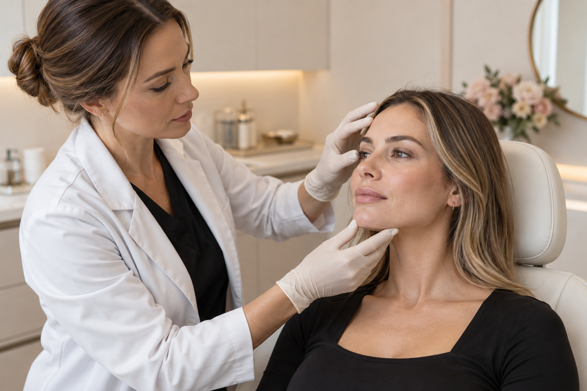

Equilíbrio
Planejamento das proporções faciais considerando o rosto de forma integrada.
Planejamento facial
Uma abordagem global que observa o rosto por inteiro para equilibrar proporções, suavizar sinais do tempo e valorizar seus traços sem apagar sua identidade.

Imagem demonstrativa — substituir pela foto oficial da profissionalO tratamento
O Full Face não é um procedimento único, mas um planejamento personalizado que avalia estrutura, simetria, sustentação e movimento facial.
A partir dessa leitura, são definidas as regiões que realmente podem se beneficiar de tratamento. A proposta é criar harmonia entre os traços, usando somente o necessário e respeitando a anatomia de cada paciente.
Possibilidades
Planejamento das proporções faciais considerando o rosto de forma integrada.
Estratégias para melhorar contornos e pontos de suporte quando indicadas.
Intervenções sutis, alinhadas à anatomia e aos objetivos individuais.
Como funciona
Análise facial, histórico, queixas e expectativas.
Identificação dos pontos que podem contribuir para mais equilíbrio.
Definição de técnicas, etapas e prioridades — sem protocolos prontos.
Orientações e reavaliação da evolução após o tratamento.
Avaliação individual
Agende uma conversa para entender quais possibilidades fazem sentido para você.
Conversar pelo WhatsApp ↗A indicação e os resultados variam conforme avaliação, anatomia e resposta individual.